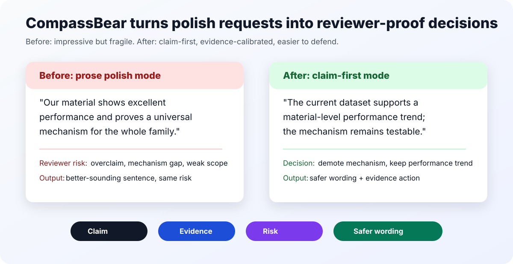

CompassBear
A claim-first research workflow skill for researchers using Claude Code or Codex. Audit overclaims, defend figures, plan rebuttals, and position manuscripts before polishing prose.

Claim discipline
Separate central claims, section claims and figure claims before rewriting.
Evidence pressure
Decide whether evidence supports, qualifies, refutes or cannot support a claim.
Reviewer defense
Turn likely reviewer attacks into demotion language and concrete repair actions.
Start with $compass-bear and ask: "Audit this abstract for overclaiming and reviewer risk."